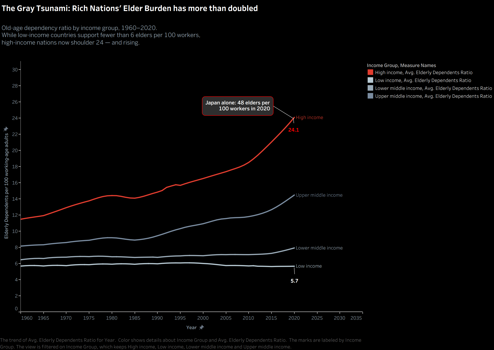
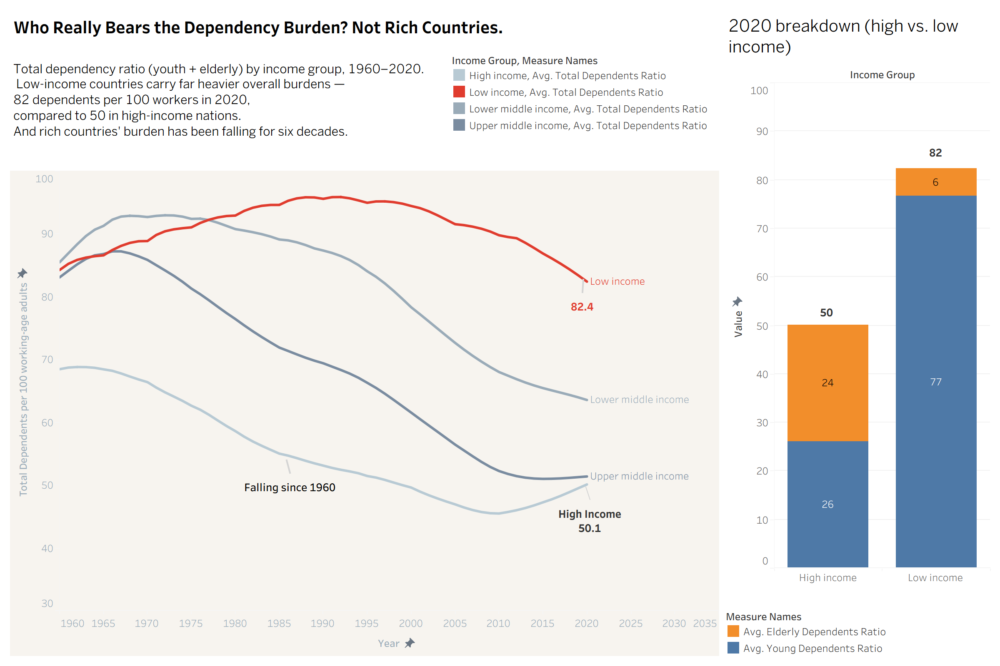

Proposition: Rich countries are facing an aging crisis — a rapidly growing elder care burden that poor countries, still managing a youth bulge, don't face.
FOR the Proposition

Design Decisions and Rationale:
-
1. Metric choice: old-age dependency ratio only
−1 (mildly deceptive)
The old-age dependency ratio is a standard metric used in pension analysis. However, showing only this metric hides the broader burden in low-income countries once child dependency is included. In 2020, total dependency was 82.4 per 100 working-age adults in low-income countries versus 50.1 in high-income countries. When I plotted total dependency instead, the headline conclusion reversed.
-
2. Y-axis starting at zero, full 1960–2020 range shown
+2 (fully earnest)
The axis starts at 0 and uses the full 61-year range with no truncation. The gap appears as large as it is, not exaggerated. A small dip in the high-income line around 1983–85 remains visible; a cropped window could have hidden it. I considered starting the axis at 4 to stretch the divergence but rejected it.
-
3. Dark alarm palette and "tsunami" in the title
−1 (mildly deceptive)
"Gray Tsunami" appears in demographic writing, so the term itself is legitimate. The persuasive move is pairing that phrase with a dark background and red lines, which creates urgency before readers inspect the numbers. A neutral title and palette made the same data feel much less alarming.
-
4. Japan callout annotation
−0.5 (slightly deceptive)
Japan's 2020 value (48.0) is accurate. The issue is that the callout points to the high-income average line (24.1), which implies Japan is representative even though it is an outlier at nearly double the group average. Many readers will absorb the callout message and miss that distinction.
-
5. Unweighted country averages
0 (neutral)
Each country counts equally regardless of population, so small countries weigh the same as large ones. This is disclosed in the caption. Unweighted averages answer "what is a typical country like?" while population-weighted averages answer "what is a typical person's situation?" Neither is inherently wrong. Unweighted likely raises the high-income average slightly, but this choice reflects analytic framing rather than intentional bias.
AGAINST the Proposition

Design Decisions and Rationale:
-
1. Metric switch: total dependency ratio
−1 (mildly deceptive)
This keeps the same data and years but switches from old-age dependency to total dependency (youth + elderly). That framing is defensible because both groups depend on working-age adults. The persuasive effect is that this switch reverses the conclusion. A reader who only sees this chart may not realize an alternative metric supports the opposite claim.
-
2. Stacked bar panel decomposing youth vs. elder burden
+1.5 (mostly earnest)
The stacked bars break total dependency into youth and elder components, showing that about 93% of low-income burden is youth while high-income is roughly evenly split. Including this decomposition improves transparency and makes the argument harder to dismiss as selective framing.
-
3. "Falling since 1960" annotation on the high-income line
−0.5 (slightly deceptive)
The statement is true for 1960 to 2010 (68.4 down to 45.5), but it omits the later increase to 50.1 by 2020 as elder burden rises. Leaving out the recent uptick preserves the intended argument and understates the reversal in the latest period.
-
4. Shared red/gray palette with emphasis redirected to low income
−0.5 (slightly deceptive)
Both charts use red/gray, but in this view red highlights low income rather than high income. Red draws attention and urgency, while gray recedes. The emotional cue is similar to the first visualization, but retargeted to support a different takeaway.
-
5. Showing all four income groups on the line chart
+1.5 (mostly earnest)
Keeping all four groups, rather than only high vs. low, reveals a consistent gradient where middle-income groups fall between the extremes. This reduces cherry-picking risk and supports interpretability.
Final Reflection
What surprised me most was how little data manipulation it took to produce opposite stories. Both charts use correct values, zero-based axes, and proper source citations, yet they point in different directions. The key difference is one aggregation-field choice: whether the view uses the Old Dependent Ratio column or the Total Dependent Ratio column. That choice is hard for readers to notice, but it drives the conclusion.
This pushed me toward a clearer standard for persuasion versus deception. Persuasion feels acceptable when a careful reader can reconstruct what choices were made and why. It starts to cross a line when critical choices are hidden enough that readers cannot tell what was excluded.
By that standard, the metric switch is the most ethically ambiguous move in this assignment. Neither total dependency nor old-age dependency is inherently wrong, but selecting one while the other would reverse the takeaway is a major omission. The Japan annotation has a similar issue because it can imply representativeness. In contrast, title language and color palette feel more like visible editorial framing. They still persuade, but readers can see those choices directly.